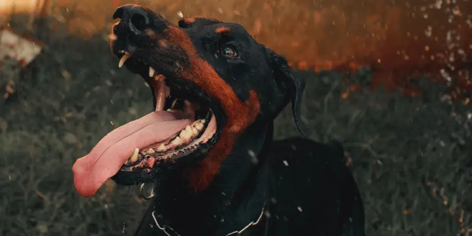

Dog Bite Lawyers
Heping Victims of Dog Attack
At Dog Bite Lawyers Tacoma, we understand how stressful and traumatic a dog bite can be. There is usually both physical and emotional injury. We are a trusted dog bite law firm in Tacoma and are committed to helping victims seek fair compensation for their injuries. No matter the circumstances of the dog attack on you, we are here to protect your rights and fight for the compensation you deserve.
You should have an experienced dog bite lawyer on your side. Having an experienced lawyer can make a big difference in your case. We will investigate the facts, negotiate with insurance companies and ensure that you are taken care of. Puncture wounds, infections and even life threatening injuries are not to be taken lightly. Your pain and suffering deserve attention and financial compenstion you deserve.

If you are a victim of a dog bite attack you need experienced legal representation. We are dedicated to representing only injured persons. We charge only when we win, and our clients never have to pay any money upfront.
The owners of dogs will often try and dismiss that attack as nothing serious, when in reality most often the attack upon you has realy negative consequences to you both physically and emotionally. We have represented many people in Washington State and we do so with compassion, integrity, and results. Let us help you. You can be certain that insurance company on the dog owners side will have lawyers working against you getting what you deserve.
We will aggressively pursue negligent dog owners and hold them accountable for the injury you have suffered and work time lost by making sure they pay a fair amount in proportion to your suffering and loss.
A dog bite can change your life in an instant.
- Dog bites can be exceptionally painful
- A dog attack can have have long-lasting consequences.
- Victims often suffer from puncture wounds.
- Victims often suffer infections.
- Victims often suffer fractured bones.
- Victims often suffer permanent scarring.
- Victims often suffer long lasting lasting fear.
- Victim often suffer long lasting lasting anxiteyt.
- Victims often misses work.
- Victims often experiences scarring,
- A dog attack can effect the type of work you can do.
- Victims often suffer emotional anguish.